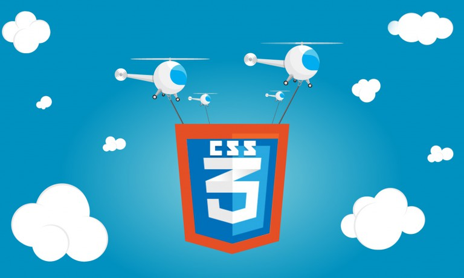

¿Qué es HTML5?

HTML5 es una colección de estándares para el diseño y desarrollo de páginas web. Esta colección representa la manera en que se presenta la información en el explorador de internet y la manera de interactuar con ella.
HTML5 está siendo desarrollado por Ian Hickson de Google Inc. y David Hyatt de Apple Inc. junto con todas las personas que participan en Web Hypertext Application Technology Working Group.
¿Por qué utilizar HTML5?
HTML5 nos permite una mayor interacción entre nuestras páginas web y contenido media (video, audio, entre otros) así como una mayor facilidad a la hora de codificar nuestro diseño básico.

Esta nueva versión se basó en el diseño más común de las páginas web alrededor del mundo para llegar a un estándar de etiquetas que realicen las mismas tareas de manera más rápida y eficiente, he aquí algunos ejemplos:
Un nuevo diseño para páginas web, reflejado en las etiquetas header ,footer, nav,section,article las cuales están destinadas a remplazar la necesidad de tener una
La nueva etiqueta video para insertar un reproductor de video, mejorando el reproductor antiguo utilizado por la etiqueta embed y evitándonos la pena de insertar el código de object, así como eliminar la necesidad del Flash Player para reproducir videos (lo que nos lleva a un ahorro en la cantidad de memoria utilizada).
Una nueva tag audio para insertar audio en nuestro sitio web, remplazando la vieja etiqueta embed con las mismas cualidades de la etiqueta anterior.
Una etiqueta canvas para manejo de gráficos en internet, sea para dibujar vectores o hacer animaciones.
¿Qué es CSS3?

Mientras que HTML nos permite definir la estructura una página web, las hojas de estilo en cascada (Cascading Style Sheets o CSS) son las que nos ofrecen la posibilidad de definir las reglas y estilos de representación en diferentes dispositivos, ya sean pantallas de equipos de escritorio, portátiles, móviles, impresoras u otros dispositivos capaces de mostrar contenidos web.
Las hojas de estilo nos permiten definir de manera eficiente la representación de nuestras páginas y es uno de los conocimientos fundamentales que todo diseñador web debe manejar a la perfección para realizar su trabajo.
La primera versión de CSS fue publicada a fines del año 1996 y fue logrando popularidad y aceptación hasta llegar a la versión 2.1, estándar actual que ofrece gran compatibilidad con la mayoría de los navegadores del mercado.
A partir del año 2005 se comenzó a definir el sucesor de esta versión, al cual se lo conoce como CSS3 o Cascading Style Sheets Level 3. Actualmente en definición, esta versión nos ofrece una gran variedad de opciones muy importantes para las necesidades del diseño web actual. Desde opciones de sombreado y redondeado, hasta funciones avanzadas de movimiento y transformación, CSS3 es el estándar que dominará la web por los siguientes años.
¿Qué es JavaScript?
JavaScript es un lenguaje de scripting multiplataforma y orientado a objetos. Es un lenguaje pequeño y liviano. Dentro de un ambiente de host, javaScript puede conectarse a los objetos de su ambiente y proporcionar control programático sobre ellos.
JavaScript contiene una librería estándar de objetos, tales como Array, Date, y Math, y un conjunto central de elementos del lenguaje, tales como operadores, estructuras de control, y sentencias. El núcleo de JavaScript puede extenderse para varios propósitos, complementándolo con objetos adicionales, por ejemplo:
Client-side JavaScript extiende el núcleo del lenguaje proporcionando objetos para controlar un navegador y su modelo de objetos (o DOM, por las iniciales de Document Object Model). Por ejemplo, las extensiones del lado del cliente permiten que una aplicación coloque elementos en un formulario HTML y responda a eventos del usuario, tales como clicks del ratón, ingreso de datos al formulario y navegación de páginas.
Server-side JavaScript extiende el núcleo del lenguaje proporcionando objetos relevantes a la ejecución de javaScript en un servidor. Por ejemplo, las extensiones del lado del servidor permiten que una aplicación se comunique con una base de datos, proporcionar continuidad de la información de una invocación de la aplicación a otra, o efectuar manipulación de archivos en un servidor.
JavaScript y Java
JavaScript y Java son similares en algunos aspectos, pero fundamentalmente diferentes en otros. El lenguaje JavaScript se parece a Java pero no tiene el tipo estático (static) de Java, ni tiene un chequeo de tipos fuerte. JavaScript usa la mayoría de la sintaxis de expresiones de Java, convenciones de nombrado, y las construcciones básicas de control de flujo, razón por la cual se le cambió el nombre del original LiveScript a JavaScript.
En contraste con el sistema de clases construidas por declaraciones quie se usa en tiempo de compilación de java, JavaScript soporta un sistema de tiempo de ejecución basado en un pequeño número de tipos de datos que representan valores numéricos, lógicos, y de cadena de caracteres (string). JavaScript tiene un modelo de objetos basado en prototipos en lugar del modelo de objetos basado en clases, que es más común. El modelo basado en prototipo proporciona herencia dinámica; esto es, que lo que se hereda puede variar entre objetos individuales. JavaScript también soporta funciones sin ningun requerimiento declarativo especial. Las funciones pueden ser propiedades de los objetos, ejecutándose como métodos levemente tipados.
Comparado con Java, JavaScript es un lenguaje muy libre de forma. No hay que declarar todas las variables, clases, y métodos. No hay que preocuparse de si los métodos son públicos, privados, o protegidos, y no hay que implementar interfases. Las variables, parámetros, y retornos de funciones no tienen que declararse explícitamente de un tipo dado.
Java es un lenguaje de programación basado en clases, diseñado para lograr seguridad de tipos, y ejecución rápida. Seguridad de tipos significa, por ejemplo, que no es posible hacer una conversión de tipos a un Integer de java para obtener una referencia a un objeto, o acceder a memoria protegida mediante la alteración del bytecode de una clase. El modelo basado en clases de Java implica en que los programas consisten exclusivamente en clases y sus métodos. La herencia de clases de Java y el tipado fuerte generalmente requiere que jerarquías de objetos fuertemente acopladas. Estos requerimientos hacen que la programación en Java sea más compleja que la programación en JavaScript.
En contraposición, JavaScript proviene en espíritu de una línea de lenguajes de programación más pequeños, con tipado dinámico, como HyperTalk, y dBASE. Estos lenguajes de scripting hacen accesibles las herramientas de programación a audiencias mucho más amplias. Esto se debe a su sintaxis más indulgente, funcionalidad especializada ya incluida, y mínimos requisitos para la creación de objetos.